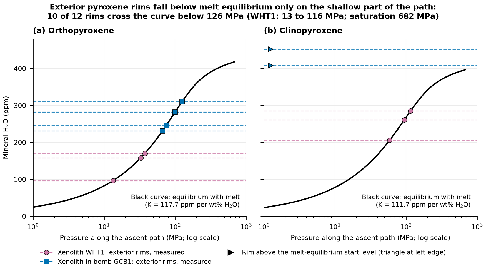
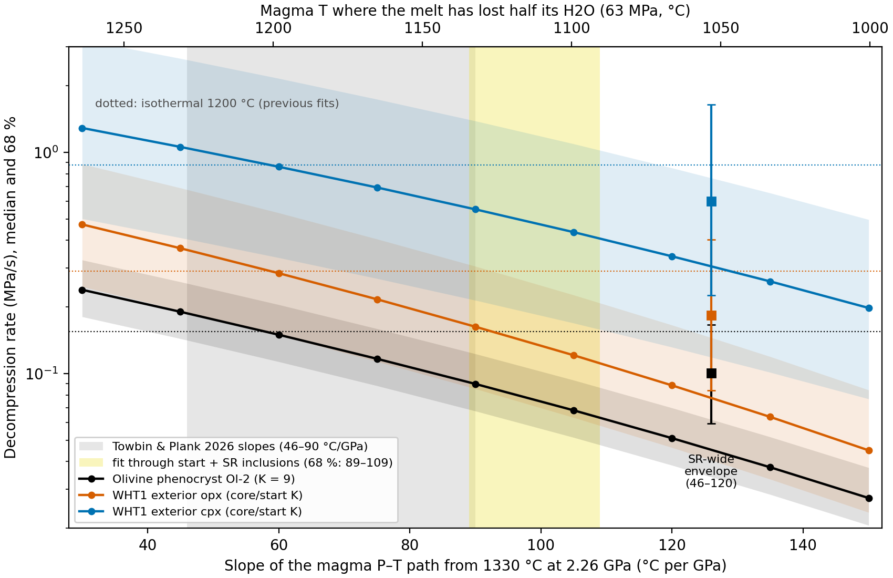
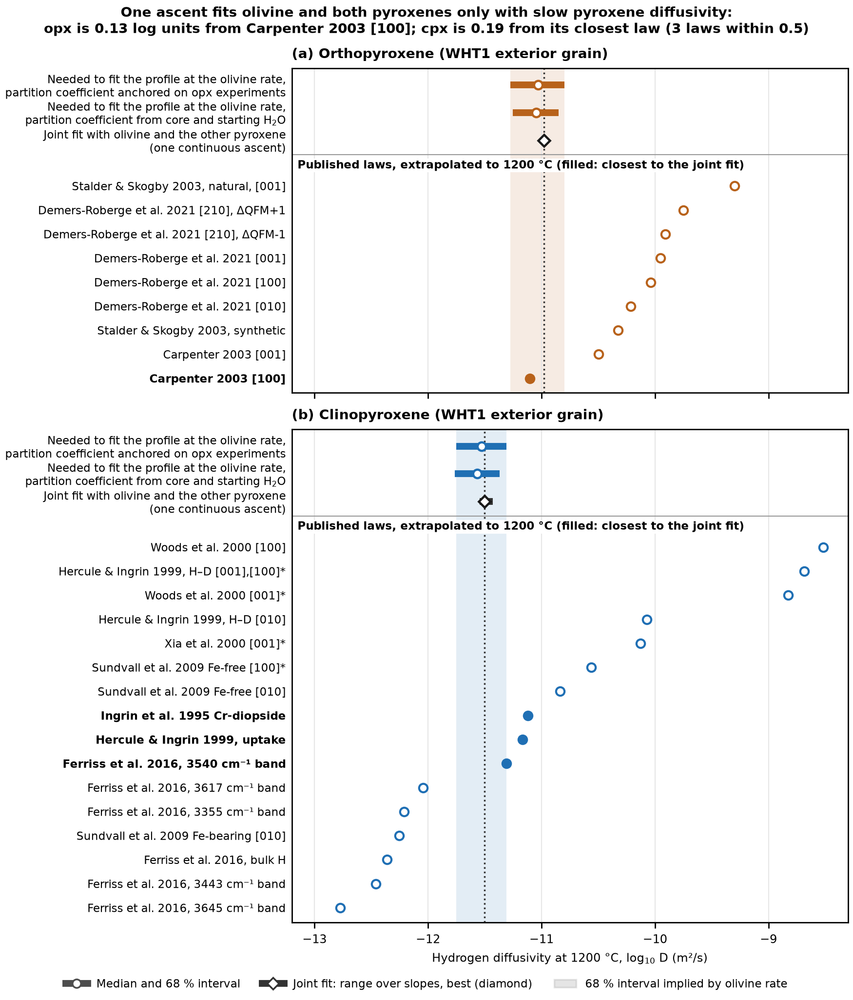
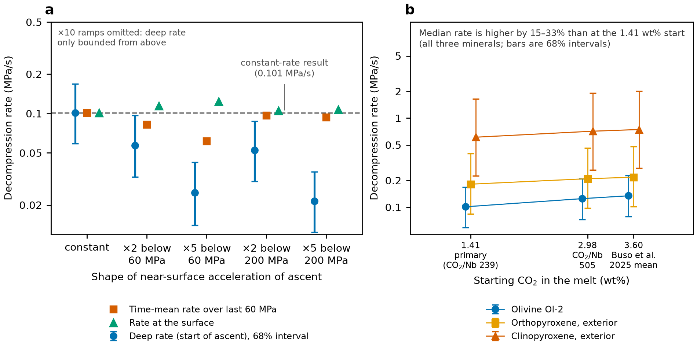
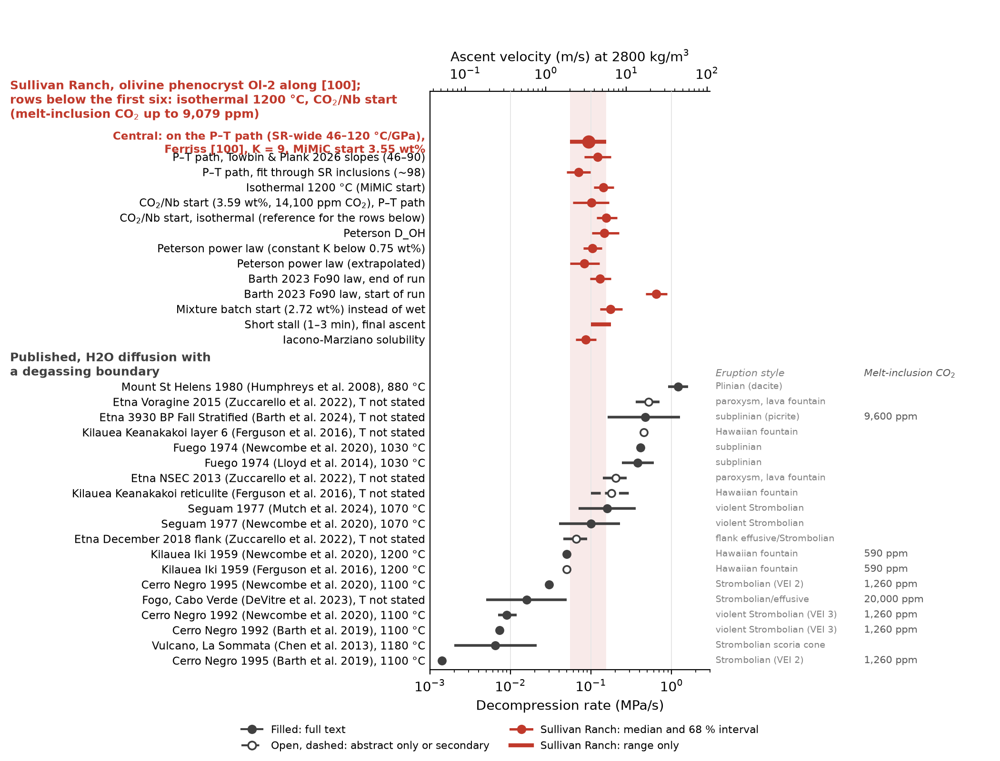
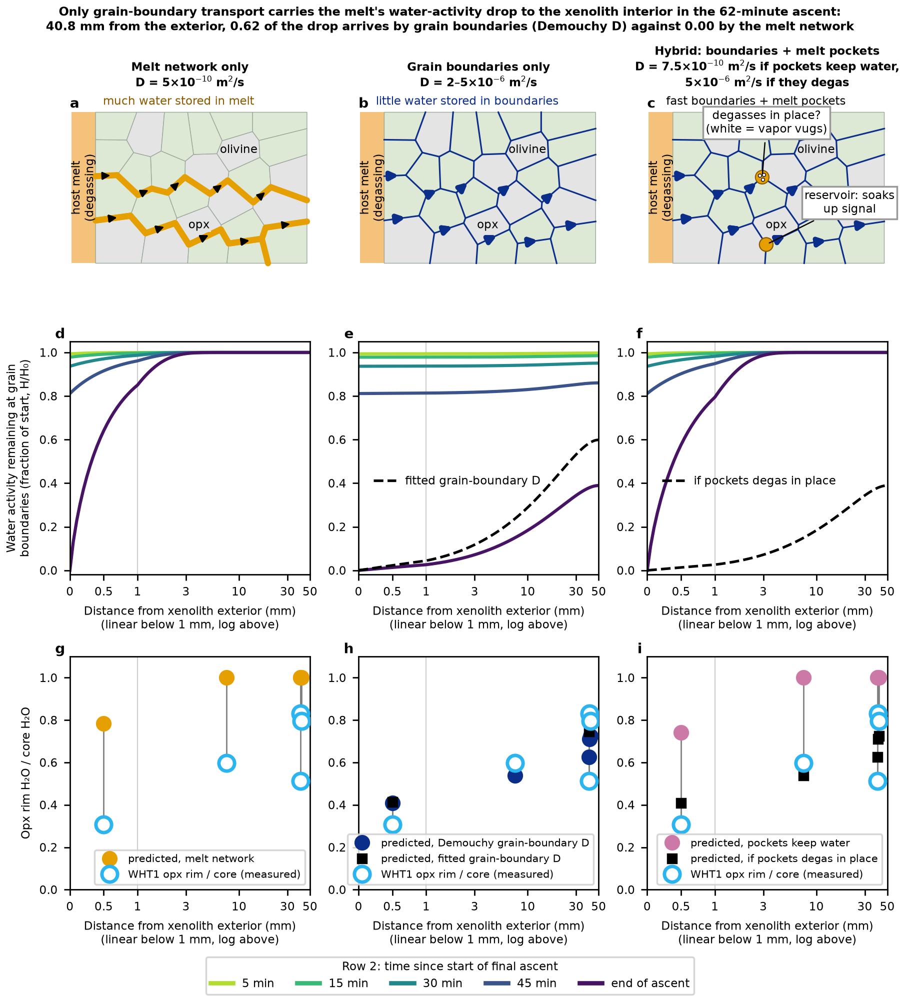

8 Stage II: final ascent in degassing magma
What does the water zoning in the olivine phenocryst and in the xenolith pyroxenes say about the last stretch of the ascent, and how did that signal get into the xenolith? This chapter answers it in seven steps. We first find where the melt loses its water, then fit the decompression rate to the olivine phenocryst Ol-2 with temperature falling along the magma P–T path. We then show that one ascent history fits olivine, orthopyroxene (opx) and clinopyroxene (cpx) together, rank the choices that move the rate, test the constant-rate and starting-CO2 assumptions, place Sullivan Ranch (SR) among published eruptions, and finally ask how the degassing signal travelled into the xenolith. Stage II is the part of the ascent where the host melt exsolves most of its water and the mineral rims lose water in response.
8.1 Where the melt loses its water
Over what pressure range does the SR melt actually lose its H2O, and so over what range can the mineral rims record it? The answer fixes which part of the ascent the profiles can resolve.
The starting melt is the published MiMiC melt (Rasmussen et al. 2020, base run: 3.549 wt% H2O from inclusion Ol23, 8,529 ppm CO2 from GC2_ol7; Chapter 6). MagmaSat in a closed system saturates this melt at 682 MPa. The melt then loses little water for a long way: it still holds 90 % of its H2O at about 248 MPa, 1.86 wt% at 60 MPa and half of it (1.77 wt%) at 55 MPa. Three quarters is gone by about 16 MPa, and at 10 MPa only 0.70 wt% remains, 20 % of the start. Most of the water therefore leaves in the last 55 MPa. At the joint-fit rate of 0.100 MPa/s (below), those 55 MPa take about 9 minutes, against about 3.2 hours for the whole interval from the 1.15 GPa pickup pressure to the surface at the same constant rate. The caveat is that this CO2 is the melt as trapped: the inclusions had already lost 46–91 % of their CO2, so the MiMiC path starts partly degassed, shallower than xenolith pickup. The second scenario, the CO2/Nb start (3.59 wt% H2O, 14,100 ppm CO2, CO2/Nb 239 × Nb 59 ppm), saturates at 922 MPa and loses half its H2O below 63 MPa; it is the case for an undegassed melt and is developed below as an option.
The shape of the path depends on the solubility model more than on the start. At 10 MPa, MagmaSat gives 0.67 wt% and Iacono-Marziano 0.92 wt% for the CO2/Nb start (SR-1), and the olivine rate on the Iacono-Marziano path is 0.086 MPa/s, 0.55 times the MagmaSat rate (both isothermal at 1200 °C, CO2/Nb start); the MiMiC start would scale both by about the same factor. We use MagmaSat as the primary model and treat Iacono-Marziano as a sensitivity case, because only the isothermal olivine fit has been run on it. The other degassing choices move the shallow path little. Open-system instead of closed-system degassing leaves the melt 0.05 to 0.07 wt% wetter at 10 MPa. Starts from 2.2 to 3.6 wt% H2O differ by 0.04 to 0.08 wt% there. Evaluating solubility at the path temperature changes every rate by 3 % or less (Appendix C).
Figure 8.1 shows where along this path the melt-equilibrium value of each pyroxene falls below the measured rims. Ten of the twelve exterior rims cross it below 126 MPa, and the WHT1 rims between 13 and 116 MPa; the outermost WHT1 opx rim (96 ppm) is reached only at 13 MPa. The two GCB1 cpx rims sit above the starting level and never cross. The rims therefore record the shallow part of the path, below about 125 MPa, where the melt loses most of its water.

Temperature enters because the path from the 1330 °C, 2.26 GPa mantle start (Plank & Forsyth 2016) cools as the magma rises. With the median slope of 82.8 °C/GPa the path is at 1147 °C where the melt has lost half its H2O (55 MPa) and 1142 °C at the surface. Both are well below the 1200 °C used in earlier isothermal fits. The next section shows what that does to the rate.
8.2 The decompression rate from Ol-2 on the P–T path
What decompression rate does the olivine phenocryst Ol-2 give once temperature follows the magma P–T path instead of staying at 1200 °C? Ol-2 is the one profile that sits fully in the melt, so it sets the absolute rate.
Ol-2 comes from the GCB1 roadside scoria and is normally zoned from a Fo 88 core plateau to Fo 84 at the rim. Its H2O profile of four points (4.4 to 7.9 ppm, outermost point 23 µm from the edge) runs along [100], the same line as its electron-microprobe traverse. We fit it with the Ferriss et al. (2018) [100] diffusivity, \(D = 10^{-5.4}\exp(-130\ \mathrm{kJ}/RT)\) m²/s (\(10^{-10.0}\) m²/s at 1200 °C), and the Towbin et al. (2023) olivine/melt partition coefficient K = 9 ppm per wt%. The boundary follows the closed MagmaSat path from the MiMiC start, and the fit uses the Bayesian grid posterior of the earlier work (Appendix A).
Variable temperature adds no new solver. For continuous ascent the profile depends on time only through \(\int D\,dt = (D_{ref}/v)\int r\,dP\), where \(r = D(T)/D(1200\ °\mathrm{C})\). A constant-diffusivity fit run on the warped pressure \(P_w = \int_0^P r\,dP'\) therefore gives the variable-temperature solution, and its rate is the true ascent rate. With \(r = 1\) the fits reproduce the isothermal ones exactly, and a direct implicit solver agrees with the warped model to 0.02 wt%, the same difference the two solvers show at 1200 °C. The path is a straight line from the mantle start with a slope drawn uniformly from 46 to 120 °C/GPa. That envelope spans the Towbin & Plank (2026) range and a Monte Carlo line through the start and the 12 SR melt inclusions (98 °C/GPa, 68 % range 89 to 109).
The result is 0.093 MPa/s (68 % range 0.055 to 0.154), or about 3.4 m/s at 2,800 kg/m³. That is 0.65 times the isothermal 1200 °C fit (0.143 MPa/s, 0.108 to 0.193), and 0.62 times the 2023 thesis fit (0.151 MPa/s), which is itself within 6 % of the new isothermal value. With the CO2/Nb start the same fit gives 0.101 MPa/s (0.060 to 0.167), 0.65 times its isothermal 0.155. Figure 8.2 shows how the rate depends on the path slope, and Table 8.1 gives the simple and best rates for all three profiles.

| Profile | 2023 thesis fit | Simple: isothermal 1200 °C | Best: P–T path | Best ÷ simple |
|---|---|---|---|---|
| Olivine Ol-2 (host scoria, 4 points) | 0.151 | 0.143 (0.108–0.193) | 0.093 (0.055–0.154) | 0.65 |
| Opx WHT1 exterior (6 points) | 0.690 | 0.256 (0.128–0.508) | 0.161 (0.071–0.363) | 0.63 |
| Cpx WHT1 exterior (10 points) | 0.678 | 0.728 (0.278–1.86) | 0.504 (0.184–1.37) | 0.69 |
The cooling path is the largest single shift in the rate, and it lowers it. The reason is that the melt loses most of its water below about 60 MPa, where the path is at 1100 to 1180 °C and the isothermal fit overstated the diffusivity. A path through the SR inclusions (98 °C/GPa, the coolest family) gives 0.070 MPa/s (0.050 to 0.099), 0.49 times the isothermal rate, and the Towbin & Plank (2026) slopes (46 to 90 °C/GPa) give 0.120 (0.082 to 0.176), 0.84 times. The SR-wide envelope between them gives the 0.65 headline factor. The path rate equals an isothermal fit at about 1150 °C, which is also the mean entrapment temperature of the SR melt inclusions.
Every mineral slows by almost the same factor because their activation energies are similar (olivine 130, opx 144 and cpx 115 kJ/mol). The path therefore does not change the disagreement between minerals. With published pyroxene diffusivities the opx rate is 1.7 times and the cpx rate 5.4 times the olivine rate on the path. The change from the 2023 values for the pyroxenes (opx 0.690 to 0.256, cpx 0.678 to 0.728 isothermal) comes mostly from the 2026 degassing path, which keeps more water late, and from the opx-anchored K (117.7 ppm per wt%, against the 2023 prior of 90): with the 2023 diffusivity brackets these alone moved the opx rate about 2× down and the cpx rate about 1.4× up. The pyroxene disagreement is resolved in the next section through the diffusivities, not through the history.
Two checks on the olivine edge treatment leave the rate where it is. Widening the prior on the final pressure from 0–5 to 0–200 bar moves the isothermal rate only within 0.143 to 0.152 MPa/s (run on the CO2/Nb start, 0.155 to 0.164 MPa/s, and scaled by 0.92). A two-population model, with mobile and trapped H as in Barth-type edge locking, fits Ol-2 only if the trapped H exchanges within about 10 s, and it then reduces to an effective diffusivity; slow edge locking cannot remove the roughly 75 % of its H that Ol-2 lost. With the absolute rate set by olivine, the pyroxenes can be added to the same history.
8.3 One ascent history fits olivine, opx and cpx
Can a single continuous ascent explain the water profiles of olivine, opx and cpx together, once the pyroxene diffusivities are allowed to differ from the 2023 values? It can, and the diffusivities it needs are those of slow natural pyroxenes.
The joint fit uses Ol-2 (4 points), the WHT1 exterior opx (6) and the WHT1 exterior cpx (10), 20 points in all. The olivine diffusivity is fixed at the Ferriss [100] law, and the opx and cpx diffusivities are free. The history is either continuous ascent or a fast ascent to a stall, a hold of 0 to 10 minutes, and a final ascent. We also ran the 2023 method on the pyroxenes: each profile gives the pyroxene diffusivity it needs for the olivine rate, with a wide flat prior, and the joint fit agrees with it (Appendix A).
With the 2023 pyroxene diffusivities held fixed the best joint χ² was 150 to 500 for 20 points, and the cpx carried most of the misfit. With the diffusivities free, the continuous isothermal ascent gives χ² 20.0 and the headline fit on the P–T path gives 20.6 (Table 8.2). That path fit puts the joint rate at 0.100 MPa/s, with a range of 0.050 to 0.200 over the slope envelope of 120 to 46 °C/GPa. It is 1.1 times the olivine-only value (0.093 MPa/s) and 0.63 times the isothermal joint rate (0.158 MPa/s), so adding the pyroxenes changes the olivine answer by about a tenth. Olivine carries 13.3 of the 20.6 χ² units, cpx 6.3 and opx 0.9. The olivine profile alone, with its four points, reaches χ² 6.0 in its best isothermal fit on its own (CO2/Nb start), so the joint fit costs olivine some fit quality to match the pyroxenes.
| Temperature | Final rate (MPa/s) | χ², 20 points | log10 D opx at 1200 °C | log10 D cpx at 1200 °C | Best stall minus continuous (Δχ²) |
|---|---|---|---|---|---|
| Isothermal 1200 °C | 0.158 | 20.0 | −10.96 | −11.45 | +0.15 |
| P–T path, 46 °C/GPa | 0.200 | 22.0 | −10.96 | −11.43 | −1.63 |
| P–T path, 82.8 °C/GPa (median) | 0.100 | 20.6 | −10.98 | −11.50 | +0.15 |
| P–T path, 120 °C/GPa | 0.050 | 20.4 | −10.95 | −11.54 | +3.57 |
The pyroxene diffusivities at 1200 °C stay at \(10^{-11.0}\) m²/s for opx and \(10^{-11.5}\) m²/s for cpx whichever temperature treatment is used, because the published laws shift with temperature by the same factor as the fit. Figure 8.3 compares them with published laws. The opx value (−10.98) is within 0.12 log units of the Carpenter (2003) [100] law for San Carlos enstatite (−11.10). The cpx value (−11.50) lies at the slow end of the published cpx laws, between the natural Cr-diopside laws and the slowest Kunlun diopside laws of Ferriss et al. (2016): the nearest faster law is their 3540 cm⁻¹ band (−11.31, 0.19 log units faster), then the slow natural Cr-diopside laws (Ingrin et al. 1995, −11.12; Hercule & Ingrin 1999 uptake, −11.17), about 0.35 log units faster. It is about 7 times faster than the Ferriss et al. (2016) bulk-H law for Kunlun diopside. That suits the SR pyroxenes, which carry 3.3 to 3.9 wt% Al2O3 and Cr-bearing diopside. The faster laws for Al-poor enstatite (Demers-Roberge et al. 2021, −10.21 to −9.75) would need an olivine rate 7 to 20 times faster.

The 2023 cpx bracket is faster than these fits need. Its upper bound, \(10^{-6.71}\exp(-100\ \mathrm{kJ}/RT)\), was the thesis estimate for a cpx with 0.07 tetrahedral Al, extrapolated from Ferriss et al. (2016). They publish laws for Kunlun diopside but no equation for the dependence on Al; the estimate’s prefactor matches their 3540 cm⁻¹ band law (log D0 −6.7) and its activation energy their bulk-H law (100.4 kJ/mol).
The exterior opx and cpx are not a like-for-like pair, and this pushes the cpx rate up. The modeled opx sits 0.5 mm from the xenolith exterior, the modeled cpx 7.5 mm (±2 mm) in. The opx rims across WHT1 show that the melt’s water drop reached that depth only in part. Rim/core is 0.31 at 0.5 mm and 0.60 at 7.5 mm, where an opx shares the cpx’s position, and 0.51 to 0.83 at 40 mm. The exchange fit puts the boundary drop at 7.5 mm at 71 to 83 % of the melt’s by the end of ascent (Section 8.7).
A boundary that drops less than the melt leaves the grain wetter than a melt boundary predicts. A cpx fit with the melt as its boundary therefore needs less time and returns a faster rate, so position pushes the cpx in the observed direction. The size is modest. On the grain-boundary boundary the implied cpx diffusivity moves by 0.03 to 0.06 log units, about 1.1 times on the rate. At the strongest buffering the cpx profile allows it moves by 0.35 log units, 2.2 times. That covers part of the 5.4-fold gap between the cpx-only and olivine rates, and the rest still needs the slow cpx diffusivity. Position is also not the only control on cpx loss. The second exterior cpx, 1.45 mm from the exterior, has no rim gradient: it is flat at 260 to 310 ppm, 0.67 to 0.80 of the intact cores, across its whole 130 µm traverse. It either lost water throughout or started lower. The exterior opx is effectively unbuffered. Buffering makes a pyroxene-only rate too fast, so the implied diffusivities are, if anything, lower bounds.
A stall is not needed at the central slope. With the 2023 diffusivities a short stall of under 2 minutes halved the misfit, but with the pyroxene diffusivities free the continuous ascent is the best history at 82.8 °C/GPa (a tie, χ² 20.6 against 20.7) and at 120 °C/GPa (worse by 3.6 for the best stall). At the coolest slope (46 °C/GPa, rate 0.200 MPa/s) a 5-minute stall fits better (χ² 20.3 against 22.0), and in the isothermal fit a stall does not help (20.2 against 20.0). A single stall improving one slope by 1.6 does not justify the extra parameter. A deeper stall would also push the pyroxenes slower than olivine, the wrong direction. The next section asks which choices could still move the rate.
8.4 What moves the rate
Which modeling choices change the olivine rate, and by how much? The answer ranks the uncertainties that could change the headline rate and shows which of them we have excluded.
Table 8.3 lists the choices, sorted from the largest increase to the largest decrease. The factors are relative to the isothermal CO2/Nb-start rate of 0.155 MPa/s (the MiMiC start gives 0.143, a factor of 0.92), and the path rows apply to the best fit. The two rows from Section 8.5 are relative to the CO2/Nb path rate (0.101 MPa/s). The factors were computed on the CO2/Nb start; because every rate scales by about the same 0.92 with the MiMiC start, the factors carry over. Three groups stand out.
- Choices that lower the rate: the diffusion temperature (0.49 to 0.84 times) and the solubility model (Iacono-Marziano, 0.55 times).
- Choices that can raise it by factors of 2 to 4: the olivine diffusivity law and the olivine partition coefficient K. The wrong crystal axis would lower it by factors of 16 to 32.
- Choices that move it little: the starting H2O, the solubility temperature and the melt-inclusion software version (12 % or less). A higher starting CO2 raises the rate by up to a third.
If the ascent accelerated toward the surface, the rate the profile records over the last 60 MPa falls by up to 0.6 times.
| Choice | Change | Factor on the Ol-2 rate | Fit | Status |
|---|---|---|---|---|
| Barth et al. (2023) Fo 90 law, start of run | Ferriss [100] to Barth start-of-run | 4.14 | isothermal | sensitivity |
| Barth et al. (2019) Fo 80 law | Ferriss [100] to Barth Fo 80 | 3.78 | isothermal | sensitivity |
| Olivine/melt K = 6 | K = 9 to 6 | 2.29 | isothermal | sensitivity |
| Higher starting CO2, 2.98–3.60 wt% | 1.41 wt% to 2.98 or 3.60 wt% CO2 | 1.23–1.33 | path | sensitivity |
| Starting melt, MiMiC (primary) | SR-1 (CO2/Nb) to published MiMiC | 0.92 | isothermal and path | adopted |
| Mixture start, 2.72 wt% H2O | SR-1 to SR-6 | 1.12 | isothermal | sensitivity |
| Solubility at path T, or published MiMiC | MagmaSat 1200 °C to along T(P); production to published MiMiC | 0.97–1.01 | path, isothermal | sensitivity |
| Short stall (1–3 min) | continuous ascent to stall | 0.65–1.15 | isothermal | sensitivity |
| Ascent accelerating 2–5× below 60–200 MPa | constant to accelerating ascent | 0.60–0.96 (last 60 MPa); 0.21–0.56 (deep) | path | sensitivity |
| P–T path, Towbin & Plank (2026) slopes | isothermal to 46–90 °C/GPa | 0.84 | path | sensitivity |
| P–T path, SR-wide 46–120 °C/GPa | isothermal to median 82.8 °C/GPa | 0.65 | path | adopted |
| Olivine/melt K = 12 | K = 9 to 12 | 0.58 | isothermal | sensitivity |
| Iacono-Marziano solubility | MagmaSat to Iacono-Marziano | 0.55 | isothermal | sensitivity |
| P–T path through the SR inclusions | isothermal to 98 °C/GPa | 0.49 | path | sensitivity |
| Ferriss law along [010] or [001] | measured [100] axis to a different axis | 0.03–0.06 | isothermal | ruled out |
Some candidate explanations of a fast rate are excluded. The profiles run along [100], so crystal orientation cannot supply the 16-to-32-fold change the other axes would imply. Deep stalls of 10 minutes or more make the pyroxenes look slower than olivine. The cooling path slows the rate rather than speeding it. The Barth et al. laws describe dehydration of Fo 90 and Fo 80 olivine (their start-of-run and end-of-run versions differ by a factor of 5), and we keep them as sensitivity cases. On profile uncertainty, we keep the fixed 2023 uncertainties; a data-estimated uncertainty, with the calibration error carried in K, moves every rate by 8 % or less. The spot-to-spot uncertainty is rejected for both pyroxenes because they scatter two to four times more than it implies.
Two choices deserve a plain statement. First, the olivine K of Towbin et al. (2023) was built on the same SIMS calibration as the SR olivine data, so the central rate is on a consistent scale. The remaining calibration uncertainty is the 12 % offset of that calibration from the Withers et al. (2012) olivine line, which corresponds to a factor of 0.79 on the rate (0.125 against 0.155 MPa/s isothermal for the CO2/Nb start; about 0.113 for the MiMiC start). Second, the wet start rests on the intact interior opx cores of WHT1. Their deepest points reach 409 to 413 ppm, in equilibrium with 3.48 wt% melt H2O (opx-anchored K 117.7 ppm per wt%), within 2 % of the MiMiC start (3.549 wt%) and 3 % of the CO2/Nb start. The drier mixture start (SR-6, 2.72 wt% H2O) gives an olivine rate 12 % higher than the CO2/Nb start but a much worse joint fit (χ² 41, against 20 to 21 for the MiMiC and CO2/Nb starts, computed with the CO2 of the CO2/Nb start). Two grains plateau near 300 to 320 ppm instead, which we carry as an uncertainty in K or in the starting H2O (Chapter 9). Two further assumptions, a constant rate and the starting CO2, are tested in the next section.
8.5 Path shape and starting CO2
Does the rate depend on assuming a constant decompression rate, or on the starting CO2? Both are open questions. Bernard & Costa (2024) found that a constant-rate fit to a hot mafic magma that accelerated toward the surface overestimates its mean ascent rate at least twofold. Olivine-hosted inclusions in continental basanites carry 1.6 to 4.8 wt% CO2 (Buso et al. 2025) and up to 3.2 wt% (Hennig et al. 2026), well above our 1.41 wt% start.
Acceleration enters through the same warp as temperature. If the rate is \(v(P) = v_0\,a(P)\), the profile depends on time only through \((D_{ref}/v_0)\int r/a\,dP\). A fit on \(P_w = \int r/a\,dP\) therefore returns the deep rate \(v_0\) exactly. We let the rate ramp linearly from \(v_0\) at 60 or 200 MPa to 2, 5 or 10 times \(v_0\) at the surface. The profile fixes the near-surface rate, not the deep one (Table 8.4, Figure 8.4 a).
- With 2 to 5 times acceleration: the mean rate over the last 60 MPa stays at 0.06 to 0.10 MPa/s and the surface rate at 0.10 to 0.12. The deep rate falls about in proportion, to 0.02 to 0.06 MPa/s.
- With 10 times acceleration: the deep rate is bounded only from above at most path slopes, because a slow deep ascent keeps the olivine near equilibrium until the last stage.
| Ascent shape | Deep rate | Mean over the last 60 MPa | Rate at the surface |
|---|---|---|---|
| Constant | 0.101 (0.059–0.168) | 0.101 | 0.101 |
| 2× faster below 60 MPa | 0.057 (0.033–0.097) | 0.083 | 0.114 |
| 5× faster below 60 MPa | 0.025 (0.014–0.042) | 0.061 | 0.124 |
| 2× faster below 200 MPa | 0.053 (0.030–0.087) | 0.097 | 0.105 |
| 5× faster below 200 MPa | 0.021 (0.012–0.036) | 0.094 | 0.107 |
Four analyses cannot resolve the shape of the path, so constant ascent remains the simplest fit. The headline rate is best read as the rate over the last ~60 MPa, where Ol-2 lost most of its water. If the magma accelerated, the mean rate from xenolith pickup could be 2 to 5 times lower. The same caveat holds for every published rate from a constant-rate fit, so the comparison in the next section stays on equal terms.
A higher starting CO2 makes the rate faster, not slower (Figure 8.4 b). The MiMiC start (8,529 ppm) gives rates about 10 % below the CO2/Nb start (14,100 ppm), the same direction. We ran two further MagmaSat paths from the CO2/Nb start (SR-1): 29,800 ppm (the ocean-island CO2/Nb of 505 times the lava Nb) and 36,000 ppm (the Buso et al. 2025 mean).
- Degassing: they saturate at 1437 and 1613 MPa and lose half their H2O by 82 and 90 MPa, against 63 MPa for the CO2/Nb path (55 MPa for the MiMiC path).
- Rates: olivine rises to 0.125 and 0.134 MPa/s (1.23 and 1.33 times) and the pyroxenes by 1.15 to 1.44 times.
The CO2-rich vapor strips H2O deeper, spreading the loss over a longer interval, so the same profile needs a faster ascent. All of these sit inside the 68 % ranges. The MiMiC start holds only the CO2 reconstructed from the richest inclusion, and the CO2/Nb start is the smallest CO2 that lies above every reconstructed inclusion, so the headline rate is, if anything, slightly low on this point (about 10 % for the CO2/Nb start). A melt with that much CO2 would already have been vapor-saturated at the 1.15 GPa pickup, and the equilibrium assumed there would need re-checking (Chapter 9). With the rate and its main assumptions in place, the next section sets it beside published ones.

8.6 SR among published eruptions
How fast is the SR ascent compared with eruptions studied with the same kind of model? The comparison uses only H2O diffusion with a degassing boundary (olivine phenocrysts, melt embayments and melt inclusions).
Figure 8.5 places the SR olivine rate among the published ones, and Table 8.5 gives the ratios. We compare each published rate with the olivine-only SR path rate of 0.093 MPa/s, not with the joint rate, because the published studies fit olivine alone. SR equals Seguam 1977 (ratio 0.93, 0.100 MPa/s; Newcombe et al. 2020). It is about one quarter of Fuego 1974 (0.23) and one fifth of Etna 3930 BP (0.20), which is the closest analog: primitive, Fo 90 olivine with CO2-rich inclusions. It is 1.9 times the published Kilauea Iki rate, and 3.1 to 10 times the Cerro Negro olivine rates (3.1 for 1995, 10 for 1992) of Newcombe et al. (2020) and 13 to 66 times the melt-inclusion rates of Barth et al. (2019).

| Study (eruption) | Model temperature | Published rate (MPa/s) | SR path ÷ study | SR isothermal ÷ study |
|---|---|---|---|---|
| Fuego 1974 (Newcombe et al. 2020) | 1030 °C | 0.410 | 0.227 | 0.349 |
| Etna 3930 BP (Barth et al. 2024) | not stated | 0.470 | 0.198 | 0.304 |
| Seguam 1977 (Newcombe et al. 2020) | 1070 °C | 0.100 | 0.93 | 1.43 |
| Kilauea Iki 1959 (Newcombe et al. 2020) | 1200 °C | 0.050 | 1.86 | 2.86 |
| Cerro Negro 1995 / 1992 (Newcombe et al. 2020) | 1100 °C | 0.030 / 0.009 | 3.10 / 10.3 | 4.77 / 15.9 |
| Cerro Negro 1992 / 1995 (Barth et al. 2019) | 1100 °C | 0.0073 / 0.0014 | 12.7 / 66.4 | 19.6 / 102 |
The comparison puts SR on a fairer footing than before, though not an identical one. Every published rate in the set was modeled isothermally at the temperature of the study’s own inclusions or eruption (1030 to 1200 °C where stated). The SR path rate equals an isothermal fit at about 1150 °C, so the ratios compare SR’s best-temperature rate with each study’s single-temperature rate. The earlier isothermal SR rate, at 1200 °C, was hotter than every comparison except Kilauea Iki, and moving to the path lowers every ratio by about a third. A path treatment of the other studies would move their rates in the same direction: Chen et al. (2013) found that 50 K of extra cooling lowered their Vulcano rates from 0.003 to 0.021 to 0.002 to 0.015 MPa/s. Seguam 1977 from melt embayments (Mutch et al. 2024, 0.07 to 0.36 MPa/s) gives a ratio of 0.58 on the path (0.093 ÷ 0.16).
SR is a cinder cone, and it sits at the fast end of the cinder-cone and Strombolian range, with only Seguam 1977 matching it. Two readings fit this and the comparison alone cannot separate them. The SR magma may have risen faster than a typical cinder-cone magma: it is rich in CO2 and carried dense mantle xenoliths. Or the rate is biased high. The candidate biases have been narrowed. The olivine K and the SR data share one calibration, the pyroxenes fit the same history once their diffusivities are free, and the cooling path has already lowered the rate by about a third. The olivine K within its published range (factor 0.58 to 2.3) and the solubility model (0.55) remain the main levers, and neither brings SR down to the Cerro Negro range. CO2 content alone does not order the published rates either: CO2-rich Etna 3930 BP is fast like SR, while the CO2-rich Fogo and La Palma 2021 eruptions are slow by other methods and CO2-poor Fuego is fast. Eruption intensity tracks the rate better, as in Barth et al. (2019).
Published rates from H loss in mantle-xenolith olivine are not like-for-like. They fix the boundary at zero from the moment of entrainment, which makes them upper bounds on the equivalent rate; we return to them in Chapter 10. Having placed the rate among the other eruptions, the last question is how the degassing signal entered the xenolith at all.
8.7 How the degassing signal entered the xenolith
Work in progress. The grain-boundary modeling in this section is still being revised. The current standard fits are the network fitted to each grain’s extrapolated rim (\(10^{-6.25}\) m²/s) and option B, one common start with a diffusivity per grain (\(10^{-5.75}\) m²/s); see the end of this section and appendix F (Section F.9). Outstanding: measured grain sizes and traverse geometry for every traverse (half or full widths, crossing traverses, elongate grains), a path-length factor for the distance to the xenolith exterior, the two interior grains at 40.5 and 40.8 mm, and the cpx coupling to the network.
How did a drop in melt water at the exterior of the xenolith reach its interior, and what does that say about the pathway? The opx grains across WHT1 act as sensors, as in the grain-boundary experiments of Demouchy et al. (2010).
The measured pattern is a gradient in how much water the opx rims have lost. The outermost spot of the exterior grain (0.5 mm from the xenolith exterior) holds 96 ppm, about 30 % of its 315 ppm core, while the rims of the interior grains (40.5 and 40.8 mm) approach their cores. If every grain sat directly in the degassing melt, all would show the same loss. They do not, so the boundary of each grain lags the melt, and the lag measures the transport through the xenolith.
We fit the WHT1 opx traverses (35 points) with each grain a slab with its own half-width and core, sitting in a 50 mm grain-boundary network whose diffusivity carries the melt’s fractional H2O drop inward; all grains share one opx diffusivity. The network uses an activation energy of 34 kJ/mol (Demouchy 2010) and opx 144 kJ/mol. We reran the fits at each joint-fit scenario, each at its own joint rate. Table 8.6 gives the result.
| Scenario (joint rate, MPa/s) | 2023-style test, χ² (5 rims) | Nested network log10 D (m²/s) | Nested opx log10 D (m²/s) | Nested χ² (35 points) | Boundary drop g, exterior / interior |
|---|---|---|---|---|---|
| Isothermal 1200 °C (0.158) | 42.1 | −5.6 (−5.6 to −5.4) | −11.5 (−11.6 to −11.5) | 62.8 | 0.98 / 0.47 |
| P–T 46 °C/GPa (0.200) | 42.0 | −5.4 (−5.6 to −5.2) | −11.6 (−11.6 to −11.5) | 63.3 | 0.98 / 0.54 |
| P–T 82.8 °C/GPa (0.100) | 42.0 | −5.6 (−5.8 to −5.6) | −11.6 (−11.6 to −11.5) | 63.3 | 0.98 / 0.55 |
| P–T 120 °C/GPa (0.050) | 41.9 | −6.0 (−6.0 to −5.8) | −11.5 (−11.6 to −11.5) | 63.7 | 0.98 / 0.46 |
Four things follow. First, the scenario barely matters: the network diffusivity is \(10^{-5.4}\) to \(10^{-6.0}\) m²/s in every fit and is lowest only at 120 °C/GPa, where the slow rate gives the network more time. Second, the exterior grain is effectively unbuffered (g = 0.98), and the interior grains saw about half the melt’s drop (g 0.45 to 0.55) by the end of the ascent. Third, the 2023-style test, which treats each measured rim as the grain-boundary value, fails in every scenario (χ² 42 for 5 rims); the rims sit 19 to 45 µm inside each grain, so they lag the boundary. Fourth, the opx diffusivity of the nested fit (\(10^{-11.5}\) to \(10^{-11.6}\) m²/s) is lower than the joint-fit value for the exterior opx (−10.98); a coupled fit that lets the grains feed H back into the network gives −10.9 to −11.0, so the exchange data prefer a somewhat lower opx diffusivity than the exterior profile alone. The set-ups differ: the joint fit gives the exterior grain the melt as its boundary and a 423 ppm start, while the nested fit puts every grain behind the grain-boundary network and fits one opx diffusivity to all five traverses, including the heterogeneous interior grains (Chapter 9). We take the spread, about 0.6 log units, as the uncertainty of the opx diffusivity from these data.
A second way to read the same data avoids the lag inside the grains. Each grain’s own profile is extrapolated to its edge (a one-step diffusion profile with the core fixed), and the network is fitted to those four edge values. This gives \(10^{-6.25}\) m²/s (68 %: −6.35 to −6.15) at 0.100 MPa/s, with χ² 5.6 for 4 rims, and it is the fit shown in the Chapter 3 Figure 13 replica (Section F.9). The 0.5 mm grain extrapolates to about zero (−8 ± 42 ppm), so an edge that follows the melt fits it without buffering. A one-step profile treats the falling edge as constant, which biases this value low; the nested fit models the falling edge but places the 0.5 mm grain’s outermost point too high.
The nested set-up above starts each grain at its own measured core, which builds in an unchanged core and a different partition coefficient for each grain. The standard nested fit (option B) instead starts every grain at one common value with one opx partition coefficient and gives each grain its own opx diffusivity, for crystal anisotropy (scripts/decompression/gb_aniso_halfwidth.py). It fits all 35 points better (χ² 43.8 against 63.3) with a common start of 388 ppm (384–400; 411 ppm gives χ² 45.8) and a network diffusivity of \(10^{-5.75}\) m²/s (68 %: −5.81 to −5.68). The two exterior grains then agree with each other and with the joint fit (opx log D −11.1 and −11.0, against −10.98), and their plateaus below the start become core loss. The interior pair needs −11.8 and −10.4, a spread twice the largest published opx anisotropy (0.6 log units), so something local, most plausibly a melt vein near the 40.8 mm grain, acts there as well. Freeing each grain’s half-width (±25 % prior) changes χ² by less than 2. The two standard fits, extrapolated rims and option B, bracket the network diffusivity at \(10^{-6.25}\) to \(10^{-5.75}\) m²/s at the headline rate. The scenario table above uses the earlier measured-core set-up.
The fitted network diffusivity (\(10^{-5.4}\) to \(10^{-6.0}\) m²/s) is 1.6 to 5 times below the intrinsic olivine grain-boundary diffusivity of Demouchy et al. (2010) at 1200 °C (5 × 10⁻⁶ m²/s, \(10^{-5.3}\)). The coupled model, which lets the grains exchange with the network, gives the same network value (\(10^{-5.50}\) to \(10^{-5.75}\)) but cannot separate the diffusivity from the storage of water in the grains relative to the boundary, because the two trade off one for one at the same χ². The profiles constrain only the effective transport into the xenolith. A fixed common starting value fits worse than free per-grain starts: χ² 151 to 164 for 411 ppm and 101 to 108 for 321 ppm, against 57 to 58 when the starts are free. The preference for 321 ppm over 411 ppm comes from one heterogeneous interior traverse and is treated as a K or starting-H2O uncertainty (Chapter 9).
8.7.1 Which pathway carries the signal
Which physical pathway can carry a drop in water activity centimeters into a xenolith within about an hour? We compare four. The comparison separates two questions: how fast the signal travels, and how fast the water itself moves. Towbin & Plank (2026) give the physical constraints: 8 to 10 % interconnected vein and film melt in 2-D (about 20 vol% in 3-D), grain-boundary glass films extending 100 to 200 µm from the veins, vugs at 1 to 4 % of the rock, and host-like chemistry reaching only the outer centimeter.
Melt diffusion in the vein network (about 5 × 10⁻¹¹ to 2 × 10⁻¹⁰ m²/s) reaches only 0.4 to 0.9 mm in an hour, far short. Dry nanometer grain boundaries, weighted by how much water the grains hold, have an effective diffusivity of 10⁻¹³ to 2 × 10⁻¹² m²/s and reach 0.02 to 0.08 mm. Vapor in vugs and cracks (3 × 10⁻⁸ to 7 × 10⁻⁷ m²/s) reaches 11 to 51 mm. Only the intrinsic grain-boundary value of Demouchy et al. (2010) and the fitted network value (\(2\) to \(4 \times 10^{-6}\) m²/s) reach about 100 to 140 mm. The lengths come from the earlier mixture-start run over about an hour and scale as the square root of time; at the joint rate the interval is about 1.5 h, which lengthens them by about 20 %.
The profiles record signal relay, not mass transport. If the boundary network holds little water of its own, a drop in water activity travels at about the intrinsic grain-boundary diffusivity, and that is what the opx profiles show. Moving the water itself is a different matter. The vein melt holds 80 to 88 % of the xenolith’s H2O and the grains about 3 %. Transporting that mass centimeters along dry boundaries would need the storage-weighted value, which is 10⁻¹² m²/s or lower and far too slow. A closed-system mass balance suggests the vein melt is dry (about 0.09 wt% H2O, from a bulk-rock value of about 80 ppm and a bulk partition coefficient of 0.0034), a low-activity sink rather than a reservoir, though H2O in the vein glass has never been measured. The lag also argues against efficient in-place degassing of a water-rich vein melt, which would lower the activity everywhere at once with no lag from the exterior.
Figure 8.6 sets three candidate mechanisms against the measured rim-to-core ratios of the WHT1 opx grains. Melt-network diffusion alone, or melt pockets that keep their water, stop the signal within 1 to 3 mm and predict no depletion beyond the exterior grain. Grain-boundary transport at 2 to 5 × 10⁻⁶ m²/s matches three of the five traverses and under-predicts the exterior grain (0.5 mm) and the long interior traverse, whose cores are heterogeneous (310 to 409 ppm within one grain). The curves are on the CO2/Nb (wet) start with a constant 1200 °C: the melt and vapor diffusivity laws they need were not rerun on the path (they require temperature laws for melt and vapor diffusion), and the network diffusivity moves by 0.5 log units at most across the temperature scenarios, far less than the orders of magnitude that separate the mechanisms.

Demouchy et al. (2010) argued from Harrison’s regimes that hydrogen diffusion in grain boundaries cannot compete with lattice diffusion in coarse-grained rocks. Over the hour of H loss, the check gives a more qualified answer. Olivine (diffusion length 0.60 mm) is in the regime where its grains engage fully with the boundaries, and opx (\(10^{-11.2}\) m²/s, 0.15 mm) is in the regime where only its outer rim exchanges. During degassing the grains are sources, not sinks, but the released water still resists the fall in boundary activity. With dry nanometer boundaries holding melt-like water, the coupled fit would need a boundary diffusivity about 100 times Demouchy’s value, so the boundary phase decides: dry boundaries have the speed but not the storage, and micrometer melt films have the storage but not the speed. Fluid-wetted boundaries and cracks give both. Towbin & Plank (2026) report olivine pitting by fluid more than 150 µm from the veins, which supports that pathway. The conclusion is that a grain-boundary-type network, most plausibly fluid-wetted boundaries and cracks, carried the signal in WHT1, at a diffusivity consistent with the intrinsic value of Demouchy et al. (2010). Path-controlled transport predicts depletion set by each grain’s distance to a connected crack or vein, not to the exterior; mapping the vein and crack positions around the analyzed grains would test it.
All of these processes ran in the last tens of MPa of the ascent. The xenolith minerals must first have been in equilibrium with the host melt for the profiles to start from the right value, which is the subject of the next chapter (Chapter 9).
Sources: data/supplement/summary_csv/Ascent_Rates.csv, Other_Timescales.csv, Literature_Rates.csv, Model_Inputs.csv; docs/UNCERTAINTY_SCENARIOS_2026-10-22.md (sections 10, 10c, 10e–10g); docs/ASCENT_RATE_SUMMARY_2026-10-22.md; report/chapters/04-degassing.md, 06-ascent-rates.md, 07-xenolith-exchange.md, 08-literature.md; the thesis Discussion.